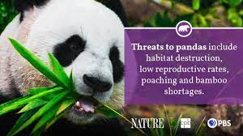

GlobalCauseFoundation
Living in the mountains of China in dense bamboo forests 2500-3000 meters above sea level, wild giant pandas were nearly driven extinct by habitat loss and poaching.
Through intense effort, China has made significant strides in conserving giant pandas and their habitat. These steps have helped buy time for wild pandas, but they are still greatly threatened and in need of help. Recent surveys suggest that there are less than 1900 wild pandas in the world.
In late 2016, the International Union for the Conservation of Nature (IUCN) listed the conservation status of giant pandas as “Vulnerable”. This means it believed pandas were “at high risk of endangerment in the wild”.
IUCN assessment emphasized several reasons for concern:
Small Populations
1. There is uncertainty regarding the number of adult pandas in the wild. Experts estimate there may be less than 1000 mature pandas left.2. Fragmented wild populations are reproductively isolated and may be declining. This can result in a potentially devastating loss of genetic diversity of the existing population.
3. Over 200 individuals spread across 23 isolated patches of habitat are thought to be at high risk of local extinction. 
Edge Effects
1. Edge effects (human activity along the edges of wildlife habitat) can substantially reduce the amount of habitat wild pandas will use.2. While there are many nature reserves in China with suitable habitat, most have significant human populations along their borders.
3. Human activity in these areas may also stress the pandas, which can lead to disruptions in normal foraging and reproductive behavior.

Climate Change
1. Wild pandas prefer cool temperatures and move higher up the mountain as temperatures become warmer.2. Climate change may drive their already fragmented populations to more isolated “islands” of habitat at high elevation.
3. The bamboo forests pandas rely on are predicted to decline by greater than 35% over the next 80 years due to climate change.